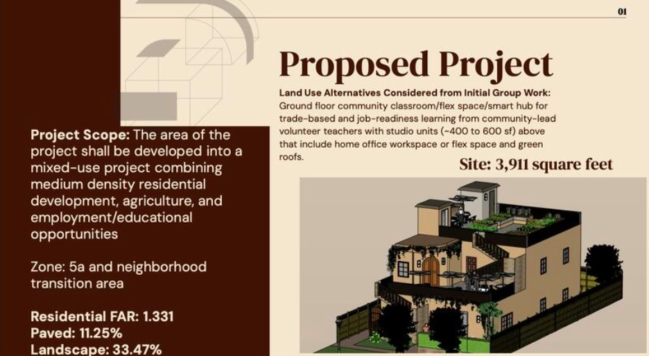

Showcasing my work in geographic information systems, spatial data analysis, and urban planning.
As a geography student at San Diego State University with a focus on GIS, I specialize in spatial data analysis, urban planning, and data visualization. My projects range from mapping urban accident patterns to creating impactful GIS video campaigns on TikTok, developing interactive dashboards, and proposing sustainable housing solutions. I’m passionate about leveraging geospatial technology to address real-world challenges, particularly in urban development and public safety.
Used Python and Jupyter Notebooks to map accident patterns in San Diego, identifying high-risk areas for urban planning.
View AnalysisCreated a series of TikTok videos for Bootcamp GIS to promote GIS applications in various industries.
Proposed a sustainable housing development on a brownfield site, focusing on accessibility and environmental impact.
Developed an interactive ArcGIS Dashboard to visualize COVID-19 hotline data, aiding public health responses.
View DashboardWrote an article for Bootcamp GIS highlighting innovative GeoAI applications in industry.
Read ArticleUsing ENVI and IDL suite to stack and animate PACE OCI Level 2 images, analyzing optical properties in the Yucatan Peninsula and potential community impacts.